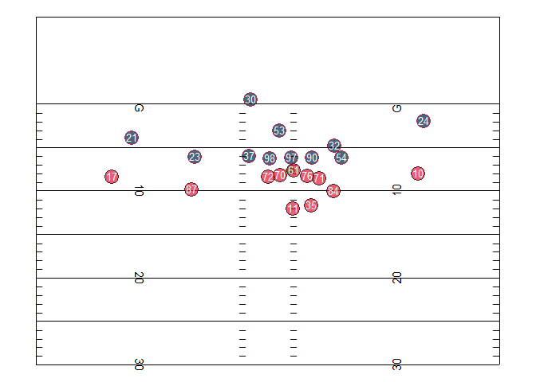
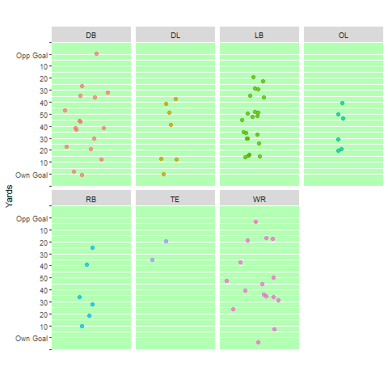
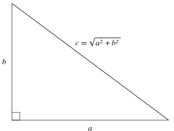
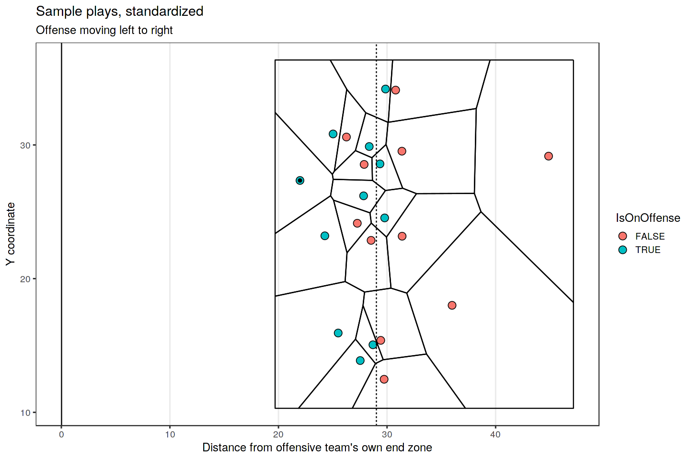
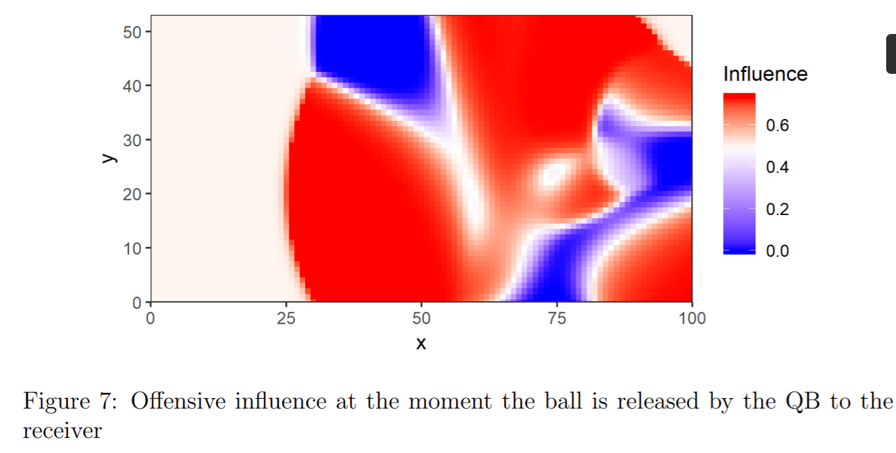

What Can You Calculate With Player Tracking Data? A List of Metrics.
The hottest commodity in the sports analytics world right now is player tracking data. It’s called different things in different sports (e.g. “Next Gen Stats” in the NFL), but it all boils down to somehow measuring exactly where every player is on the field/pitch/court in very short intervals (e.g. 10 times per second).
These data sets are extremely rich, complex, and big. For example, in a 7-second American football play, you would have 22 players x 10 observations per second x 7 seconds = 1,540 observations of several metrics (at a minimum, X and Y coordinates on the field). Just wrangling this data into analyzable shape is an enormous challenge, but I’m not writing about that today because I’m not an expert in data engineering.
Instead, let’s say you have a bunch of this data cleaned, imported, and ready to analyze. What to do next can still feel overwhelming. Where do you even start? My goal with this post is to provide a unified, cross-sport list of high-level options for things you could calculate with tracking data based on the work that I’ve seen; I want to make the problem of what to do next less abstract.
A couple caveats: first, I come at this from a sports science/player performance/injury perspective, rather than from fan engagement or in-game strategy. This is supposed to be a living document (LAST UPDATE: February 12, 2020), and I’m hoping other people will help me flesh out this list with things I’ve missed to make it more comprehensive. But cut me a little slack if I miss something obvious from outside my expertise – we all need diverse teams to do great work. Second, this post is designed to be a list of metrics you could calculate from the data, not questions you can answer with it. Hopefully this list of metrics a.) helps break the logjam of “Oh God where do I start with all this?” and b.) helps suggest interesting questions you could investigate with some of them. Third, there are a virtually infinite number of ways you could combine and tweak all these metrics – if there’s a popular one of these you like that I didn’t specifically include I’m happy to add it to the list, but I wanted to start with the overarching concepts. A detailed, near-infinite list might be useful for some people, but it wasn’t my goal here. Consider this more an attempt at a taxonomy.
*Deep breath* OK, let’s go.
First, Plot Your Data
This advice extends well beyond player tracking data, but always plot your data before doing any analysis on it.
Here’s an example of what player (and ball) tracking data looks like when you plot (and animate it) over time. These “dots” visualizations are probably the simplest thing you can do with the data but can be quite interesting! They’re a new way of looking at all the action on a play at once – rather than just what the TV cameras show, presented in a stripped-down way. Below are two examples of these plots – a plot of a single play from a 2017 NFL game (provided by Mike Lopez, the NFL’s Director of Analytics), and a plot of a bunch of plays where NFL players were injured from the NFL’s 2019-20 “1st and Future” Analytics competition, split by position. For guidance on how to create similar plots in R, check out the “What Can We Do With Next Gen Stats?” section of this post by Mike.


These visualizations can also be isolated, broken down, and re-aggregated in infinite interesting ways – for example, all the routes run by Chiefs tight end Travis Kelce in the 2019 season.
A(n Incomplete) List of Metrics You Could Calculate
So you’ve plotted your data. Now what? How can you quantify, and subsequently numerically analyze, what’s going on in the tracking data? Below I’ve tried to categorize, at a high-level, the major metrics I’ve seen people pull from tracking data (which I assume includes, at a minimum, X and Y coordinates for each player and the ball multiple times per second). This list scopes out some rough bounds for what data scientists might call “feature engineering” – a fancy term for defining the variables you want to include, say, a regression model.
Player Movements and Movement Patterns:
Distance Traveled – easily calculable using the Pythagorean theorem. Pause for a gasp at the real-world utility of middle & high school geometry! If a is the difference in X coordinates between two consecutive measurements, and b is the difference in Y coordinates between two consecutive measurements, then you can easily calculate the total distance traveled between two consecutive measurements c. Most often you’d sum these distances up to get the total distance a player traveled over some relatively long period of interest (a play, half, game, or season). This could be considered a very crude measure of the (external) “load” on a player – or how hard s/he worked in a given period.
Player Speed – if you’ve calculated the distance d, and you know the time between two measurements (Δt), you can calculate a player’s speed using d/Δt and convert to sensible units depending on your particular application (e.g. meters per second (m/s), miles per hour (mph)). Sub-metrics within player speed could include…
-Average speed during a period of interest
-Maximum speed during a period of interest

Player Distances by Speed – if you know the player’s speed and distance traveled in each interval, you can sum up either the total time or distance a player traveled in specific speed ranges. These speed ranges are broken into categories such as “walking/jogging”, “high-speed running”, “very high-speed running,” and “sprinting” using sport- or even individual-specific thresholds. How these thresholds are determined is beyond the scope of this post. So you could, for example, calculate the amount of time or distance traveled by a player while in a “high-speed running” range (e.g. 9-13 mph) or a “very high-speed running” range (e.g. 13-18 mph) for some time period of interest, such as a game or training session. This provides a somewhat more-refined look at a player’s “load,” since walking a mile (I can do easily) and sprinting a mile (I would die) are very different tasks.
Accelerations/Decelerations – If a player is (or can be assumed to be) moving in a straight line and you have a player’s speed s at consecutive time points, then his/her acceleration over that period is Δs/Δt, expressed often in meters/second/second (m/s^2) or in G-forces. These forces put a lot of wear-and-tear on player’s bodies and are relevant when tracking their health (how many times have we asked Player X’s knee to endure sharp decelerations this week?) as well as their performance (how fast can Billy Hamilton accelerate to reach 1st base or catch a fly ball?).However, the actual formula for acceleration is based on velocity v, which is a combination of speed and direction.
Think about sitting in the carnival ride the Scrambler when it’s going at full speed. You feel a force pushing you into the side of the car – that’s an acceleration, and it’s certainly relevant when talking about, for example, the forces players experience on their joints or heads. Calculating this acceleration requires some tricky math I’m not going to get into here (read: I’m not an expert). Some GPS units will give you a readout of a player’s acceleration during each interval between measurements, but if you’re working without that (or even if you are!) you’ll likely want to consult a physicist or biomechanist.
Once you have a measure(s) of acceleration or deceleration you’re satisfied with, there are several things you can do with these:
-Maximum acceleration and/or deceleration during a given period (e.g. a play)
-Duration spent above a certain acceleration or deceleration threshold
-Number of distinct times a player exceeds a specific threshold for acceleration or deceleration, where a “distinct event” ends when a player’s acceleration or deceleration drops back below the stated threshold
Directional (Movement) Changes – this is related to accelerations and decelerations, but you can use the X and Y coordinates between two consecutive measurements to determine the direction of movement between those time points. You can then compare the direction of movement between two successive pairs of measurements to calculate the angle between the directions the player is moving between those two pairs. The angles could run between -180 and +180 degrees, with negative angles indicating a left turn and positive angles indicating a right turn. The absolute value of this angle would indicate the “sharpness” of the turn. You could turn these directional change angles into any number of metrics.
A few examples:
-Maximum directional change in 1-second period
-Number of directional changes greater than some specified angle in a 1-second period over the course of a game
-Number of directional changes greater than some specified angle in a 1-second period while traveling above some specified speed over the course of a game
–“Zig-zag Ratio” – this was a new metric developed by Elijah Hall in the NFL’s 2019 1st and Future contest. It is essentially an overall way to measure how “curvy” a player’s movement was in a specified period. It is simply the ratio the total distance the player traveled and the straight-line distance between the points at the start and end of the time period you’re interested in. The ratio will be higher for “curvier” routes, becoming infinite if you move some but end up back where you started. I haven’t fully thought through the implications of this metric (perhaps multiplying the ratio by the total distance traveled would be better as taking one step forward and half a step back would result in a high “zig-zaggyness” ratio (2.0) but doesn’t represent a lot of work), but it’s an interesting idea some of you might want to play around with.
Orientation Changes – Instead of using changes in the direction of movement, you could also measure changes in a player’s “orientation” if your tracking data includes such a measure. This could be more relevant than directional changes in measuring some forces on joints – for example, a player could be running in a straight line but shifts his/her hips to look back for a pass in the air. That shifting is theoretically important to take into account when measuring player load and could be combined with actual changes in the direction of movement and accelerations/decelerations to achieve a more complete picture of the forces a player’s body undergoes at any given moment.
Per the NFL’s Next Gen Stats, orientation is the direction a player is “facing.” But it may not be what you’re thinking. The GPS chips are in a player’s shoulder pads, so their orientation is the direction their shoulders and torso are pointing – not their head (i.e. it doesn’t represent where they’re looking). I would suggest using this metric with caution unless you understand exactly what it represents about the player’s body.
Acute vs. cumulative measures – generally speaking, any of these metrics could be measured over any time period, from a tenth of a second in-game to cumulatively over an entire season or even career. How hard did Derrick Henry decelerate on that run on 2nd & 3 when he got hit vs. how many decelerations >2.5 m/s^2 has he experienced in the last 6 weeks are different metrics built from the same basic measurement. Both acute and cumulative measures are likely valuable dimensions to consider when using tracking data to assess player performance and health.
Which is more relevant will vary by question. For example, do I want to know what acute movement led to Player X’s specific knee injury? Or do I want to know what kind of in-game movement patterns are “riskier” for certain injuries? For these, more acute or short-term measures are probably most relevant.
Or do I want to know what movement “loads” push players into higher-risk zones over the course of a season? There, longer-term cumulative measures are probably most relevant.
Contextual Strategic Information
Distances Between Players – This is just what it sounds like. You can calculate the distance to the closest (or second-closest) player on an opposing team or on your own team as a crude contextual measure of the quality of a player’s positioning. You can also think of “distances” in terms of time – not how physically far is a defender from me, but how long will it take him/her to reach me with his/her current speed and direction? This could be useful, for example, in predicting the number of yards an NFL running back is likely to gain from any given spot in his run, or measuring how valuable a basketball shot is based on how contested it is.
Under this general umbrella you could calculate things (engineer features) like:
-Distance to closest defender
-Distance to second-closest defender
-Distance to closest ally (e.g. blocker in football)
-Distance to second-closest ally
-Number of defenders within X distance of ballcarrier or receiver
-Number of defenders within X time of player’s current (or a future expected) position given current velocities and directions
Alternatively, you could simply use raw data on each player’s speed and location (and/or their speed and location relative to something else of interest, like a ballcarrier) and feed it into a fancy neural network to predict some aspect of a game you’re interested in (such as the number of yards a running back will gain on a certain play). That is, if I’m understanding their explanation correctly, basically what The Zoo did to win the 2019 NFL Big Data Bowl (#BigDataBowl Mike, you happy?).
Zone of Control – This isn’t a single metric so much as a general set of analyses you can undertake with tracking data that could then be used to address any number of questions. You can start by building “Voronoi diagrams,” which is a fancy math term for a diagram showing which areas of a field/court/pitch are closest to each player. Below is an example for an NFL play, but these are also extremely common in soccer, basketball, and hockey. This is a crude way of looking at who “controls” which areas of the field based on static player positions at a single point in time.

Better methods involve accounting for each player’s direction and velocity. If you’re a wide receiver sprinting down the field, you “control” very different territories depending on whether a safety who’s 5 yards straight ahead of you is backpedaling or sprinting towards you at full speed, for example. Check out these papers for more details.

Shape Analysis – Player movements over time (a few seconds) form lines or curves that can be broken up and analyzed. How you would break up and analyze these curves is sport-specific and requires a ton of subject matter expertise.
For example, in the NFL you might want to look at the shape of a wide receiver’s route over an entire play and then automatically identify and classify those routes for later use by coaches to look at player tendencies.
In soccer, you could map passes (ball movements rather than player movements) and then use a clustering algorithm to try and create a taxonomy of the most common passes for various teams.
That’s it for now. But as I said above, this is a living document. I will regularly add to it as people point things I’ve missed or new ideas catch my eye, and I’ll always change the date of the last update so people know if they should skim for something new.